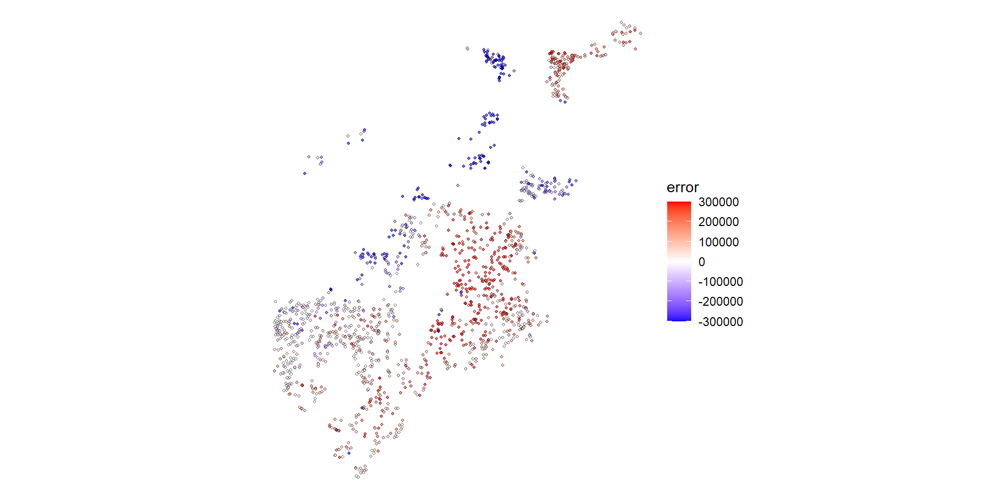
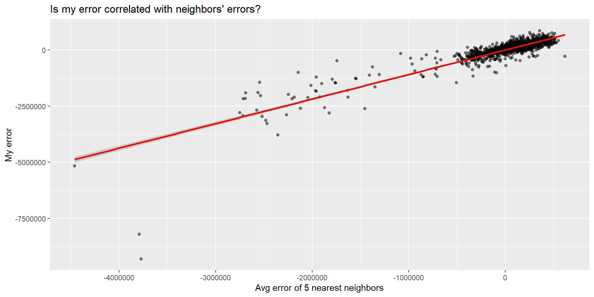
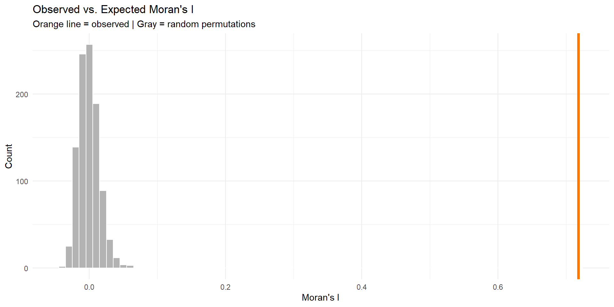

Code
tracts <- get_acs(
geography = "tract",
variables = "B01003_001",
state = "PA",
geometry = TRUE
)Week 7: MUSA 5080
Dr. Elizabeth Delmelle
October 21, 2025
We noticed something in your homework submissions…
Many of you have messy output in your rendered HTML files from tigris and tidycensus functions.
Example of what we’re seeing:
Retrieving data for the year 2022
|======================================================================| 100%
|======================================================================| 100%
Downloading: 4.3 MB
Downloading: 3.7 MBThis clutters your professional report!
What’s happening:
When you use tigris or tidycensus functions, they show download progress by default.
Shows:
Getting data from the 2018-2022 5-year ACS
|======| 100%This is helpful when coding!
All those progress messages appear as ugly text in your final document.
This looks unprofessional and makes your work harder to read.
Solution: Suppress progress messages in your code chunks
progress = FALSETwo ways to fix this:
Please go back to your homework and:
.qmd fileprogress = FALSE to all get_acs(), get_decennial(), and tigris function calls
Deadline: Before our next class meeting
Why this matters: We gotta look good!
Part 1: Review & Connect
Part 2: Evaluating Model Quality
Part 3: Moran’s I as a Diagnostic
BREAK (10 min)
Part 4: Midterm Work Session (90+ min)
Weeks 1-3: Data foundations
Week 5: Linear regression fundamentals
Week 6: Expanding the toolkit
You learned to create spatial features:
Today’s Question:
How do we know if our model still has spatial structure in its errors?
If errors are spatially clustered, we’re missing something important!
Building the model:
NEW: Spatial diagnostics:
If errors cluster spatially, it suggests:
Prediction error for observation i:
\[e_i = \hat{y}_i - y_i\]
Where:
In our house price context:
Call:
lm(formula = SalePrice ~ LivingArea, data = boston)
Residuals:
Min 1Q Median 3Q Max
-855962 -219491 -68291 55248 9296561
Coefficients:
Estimate Std. Error t value Pr(>|t|)
(Intercept) 157968.32 35855.59 4.406 1.13e-05 ***
LivingArea 216.54 14.47 14.969 < 2e-16 ***
---
Signif. codes: 0 '***' 0.001 '**' 0.01 '*' 0.05 '.' 0.1 ' ' 1
Residual standard error: 563800 on 1483 degrees of freedom
Multiple R-squared: 0.1313, Adjusted R-squared: 0.1307
F-statistic: 224.1 on 1 and 1483 DF, p-value: < 2.2e-16** Random errors (good)**
** Clustered errors (bad)**
How do we test this?
Look for spatial autocorrelation in the errors
“Everything is related to everything else, but near things are more related than distant things.”
— Waldo Tobler (1970)
Applied to house prices:
Applied to model errors:
Map your errors to see patterns:

What to look for:
Create the spatial lag:
Then plot:

Moran’s I measures spatial autocorrelation
Range: -1 to +1
Formula (look’s scary, but its so intuitive!):
\[I = \frac{n \sum_i \sum_j w_{ij}(x_i - \bar{x})(x_j - \bar{x})}{\sum_i \sum_j w_{ij} \sum_i (x_i - \bar{x})^2}\]
Where \(w_{ij}\) = spatial weight between locations i and j
5 houses in a row, predicting sale prices:
| House | Actual Price | Predicted Price | Error |
|---|---|---|---|
| A | $500k | $400k | +$100k |
| B | $480k | $400k | +$80k |
| C | $420k | $400k | +$20k |
| D | $350k | $400k | -$50k |
| E | $330k | $400k | -$70k |
Mean error = +$16k
The question: Are errors for nearby houses similar to each other?
Subtract the mean error from each house’s error:
| House | Error | Mean Error | Deviation from Mean |
|---|---|---|---|
| A | +$100k | +$16k | +$84k |
| B | +$80k | +$16k | +$64k |
| C | +$20k | +$16k | +$4k |
| D | -$50k | +$16k | -$66k |
| E | -$70k | +$16k | -$86k |
Positive deviation = we over-predicted (actual > predicted)
Negative deviation = we under-predicted (actual < predicted)
For each neighbor pair, multiply their deviations:
Neighbor Pairs:
Sum of products = 11,044
What does this mean?
Positive products = similar neighbors - A-B: both over-predicted (both positive) - D-E: both under-predicted (both negative)
Negative product = dissimilar neighbors
- C-D: one over, one under
The pattern: High-error houses cluster together, low-error houses cluster together
The formula is really just asking:
“When I’m above/below average, are my neighbors also above/below average?”
Breaking it down:
\((x_i - \bar{x})\) = How far is my house’s error from the mean?
\((x_j - \bar{x})\) = How far is my neighbor’s error from the mean?
Multiply them:
Sum across all neighbor pairs and normalize
Result:
The formula is really just asking:
“When I’m above/below average, are my neighbors also above/below average?”
Breaking it down:
\((x_i - \bar{x})\) = How far am I from the mean?
\((x_j - \bar{x})\) = How far is my neighbor from the mean?
Multiply them:
Sum across all neighbor pairs and normalize
Result:
Different ways to define spatial relationships:
Contiguity
Distance
k-Nearest
For point data (houses), use k-nearest neighbors
Spatial lag = average value of neighbors
| House | Sale Price | 2 Nearest | Spatial Lag |
|---|---|---|---|
| A | $200k | B, C | $275k |
| B | $250k | A, C | $250k |
| C | $300k | B, D | $275k |
| D | $350k | C, E | $350k |
| E | $400k | D | $350k |
In R:
Calculate Moran’s I for your errors:
statistic
0.7186593 [1] 0.001Interpretation:
Compare observed I to random permutations:

If Moran’s I is high (errors clustered):
If Moran’s I ≈ 0 (random errors):
✅ Your model adequately captures spatial relationships!
“In my spatial statistics class, I learned about spatial lag and spatial error models for dealing with spatial autocorrelation. Why aren’t we using those here?”
(Spatial Statistics Class)
Spatial Lag Model: \(Y_i = \rho WY + \beta X_i + \varepsilon\)
Spatial Error Model: \(Y_i = \beta X_i + \lambda W\varepsilon + \xi\)
Purpose:
When to use: Academic research on spillover effects, peer influence, regional economics
(This Class)
Our Approach: \[Y_i = \beta_0 + \beta_1 X_i + \beta_2(\text{crimes}_{500ft}) + \beta_3(\text{dist}_{downtown}) + \varepsilon_i\]
Purpose:
When to use: Real estate prediction, housing market forecasting, policy planning
1. Simultaneity Problem
2. Prediction Paradox
3. Data Leakage in CV
Instead of modeling dependence in Y (prices), model proximity in X (predictors)
| ❌ Spatial Lag | ✅ Our Approach |
|---|---|
| “Near expensive houses” | “Near low crime areas” |
| Uses neighbor prices | Uses neighbor characteristics |
| Circular logic | Causal mechanism |
| Can’t predict new areas | Generalizes well |
If Moran’s I shows clustered errors:
✅ Add more spatial features (different buffers, more amenities)
✅ Try neighborhood fixed effects
✅ Use spatial cross-validation
❌ Don’t add spatial lag of Y for prediction purposes
Both approaches are valid for different goals! Match method to purpose: inference → spatial lag/error models; prediction → spatial features.
When we say OLS estimates are “biased and inconsistent” with spatial lag models, what does that mean?
Definition: Expected value ≠ true parameter
\[E[\hat{\beta}] \neq \beta\]
What this means:
Example:
Definition: Doesn’t converge to true value as n → ∞
\[\hat{\beta} \not\to \beta \text{ as } n \to \infty\]
What this means:
Example: - n = 100 → estimate = 80 - n = 10,000 → estimate = 82 - n = 1,000,000 → estimate = 84 - Never reaches true value of 100
Spatial autocorrelation in errors indicates model misspecification
Moran’s I is a diagnostic tool:
Iterative improvement:
Spatial autocorrelation: - https://mgimond.github.io/Spatial/spatial-autocorrelation.html
spdep package: - https://r-spatial.github.io/spdep/
Come see me during the work session for: